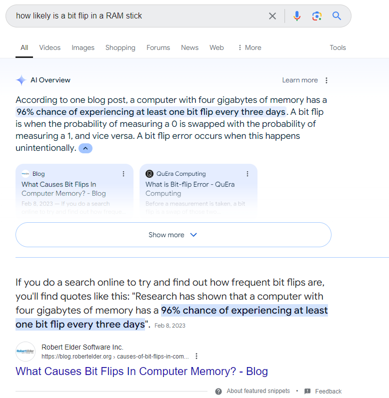

Its a bad vibe when your radiation machine flips is strength setting from 5 to 133 because one bit flipped. Or maybe one bit turns your $10 deposit into a -$2,147,483,638 withdrawl.
Decimal | Binary
5 00000101
133 10000101
(2's compliment)
Decimal | Binary
+10 00000000000000000000000000001010
-2147483638 10000000000000000000000000001010
In reality, good programs check data at many steps of the process, ensuring safe behavior in any unexpected circumstance. But lots of programs are built more simply.
The inspiration for this investigation came from this event in 2013:
A moment in SMB64 speedrunning where mario seemingly teleports for no reason, saving time in the race. The speedrunning community ended up recreating this exact moment by manually flipping a single bit from C5 -> C4.
Decimal | HEX
197 C5
196 C4
The vast majority of the internet claims COSMIC RAY INTERVENTION.
This is usually called a Single Event Upset.
This great Veritasium video explains the effect. Including a story of election results in Berlin.
With a quick google search you find the ever trustworthy AI generated response. 
Thats crazy, if that number is correct then every device almost always has a bit flip every week. (Because most consumer devices have more than 4GB of RAM)
Digging deeper I found a competing google paper. Basically, it says that bit flips happen almost never, and, if they do, it's likely due to a hardware problem that will lead to many more bit flips on that specific RAM stick. Additionally, a blog post on robertelkder.org claims that the situation has to be perfect for cosmic rays to intervene. Robert has lots of pictures so it seems trustworthly. But I have genuinely no clue if he is right.
Basically, I've set up a test bench to just allocate 10(ish) Gigs of RAM, set it all to 00000000 and check every once in a while to see if anything changed. Its a super simple setup. But I wanted to just sit a wait and see if I could get any alpha particle related flips. Feel free to check out my code on github github.com/danbotMBM/bitflip_lab.
Its been running for a couple months now and not a single bit is flipped. I think I've set everything up correctly with the code. But please reach out if you have any thoughs.
Here are just some details on what when into the development